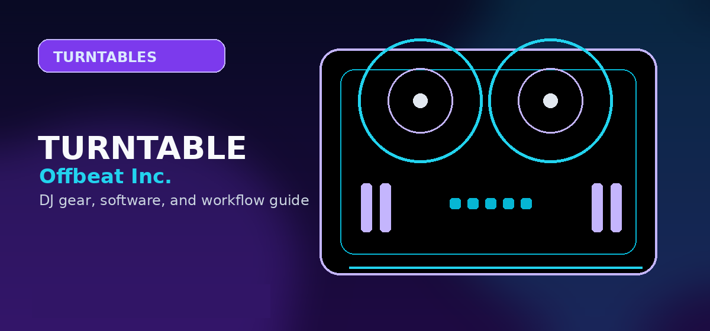

Best DJ Turntable Cartridges & Needles 2026: Ortofon vs. Shure Comparison
Comprehensive guide to best turntable cartridges needles DJs 2026 Ortofon Shure comparison with practical recommendations and current buying notes — updated 2026.

Disclosure: This page uses affiliate links. We may earn a commission at no extra cost to you. Full disclosure →
In 2026, vinyl remains a cornerstone of the professional DJ booth, but the gear that translates those grooves into sound has evolved. The cartridge and stylus (the "needle") are the most critical points of contact in your setup; the wrong choice leads to skipped tracks, worn-out records, or muddy audio. For decades, the industry has been a battleground between the Swiss precision of Ortofon and the rugged, American-engineered durability of Shure. Whether you are a battle DJ performing aggressive scratches or a club resident focusing on seamless transitions and sonic warmth, your choice of cartridge defines your reliability under pressure. This guide breaks down the top contenders for 2026, comparing tracking ability, sonic profile, and longevity to ensure your decks perform flawlessly during every set.
Ortofon’s Technical Edge: The Concorde Era
Ortofon has dominated the modern era with the Concorde series, specifically the MKII line. The brilliance of the Concorde system is the integrated headshell, which allows for a "plug-and-play" installation that eliminates the need for tedious alignment. For 2026, the Concorde MKII Mix remains the gold standard for versatility, offering a balanced frequency response that works across all genres. Those demanding extreme tracking—specifically for heavy scratching—should look toward the Ortofon Quartz. It is designed to stay locked in the groove regardless of how violently the record is manipulated. While slightly more expensive, Ortofon’s precision engineering reduces record wear over time, making it the smarter long-term investment for those with expensive vinyl collections.
Confirm today’s price, stock, and return policy before buying.
Shure’s Industrial Strength: The M44-7 Legacy
While Ortofon focuses on modularity and precision, Shure is the "workhorse" of the DJ world. The Shure M44-7 remains a legendary staple in 2026 due to its unmatched ability to handle heavy tracking forces. If your style involves aggressive back-cueing and high-energy scratching, the M44-7 is often preferred for its "bulletproof" feel. Its spherical stylus is designed to glide through the groove without jumping, even on slightly warped records or in vibrating club environments. Sonically, Shure cartridges tend to have a punchier low-end and a more mid-forward presence, which helps the beat cut through a loud PA system. It is a raw, durable tool built for the chaos of the booth rather than the sterile environment of a studio.
Confirm today’s price, stock, and return policy before buying.
Tracking vs. Fidelity: Choosing Your Stylus
The most important technical decision you will make is choosing between a spherical and an elliptical stylus. Spherical needles are the standard for DJs because they are more forgiving; they track better during scratches and are less likely to skip. The Shure M44-7 and Ortofon Concorde Mix utilize this design to prioritize stability over extreme detail. Elliptical styli, conversely, fit deeper into the groove, providing superior high-frequency response and clarity. These are ideal for "vinyl purists" or DJs who play lounge and deep house where audio fidelity is paramount. However, elliptical needles are more fragile and prone to skipping during rapid movement. In 2026, most pros opt for spherical for live sets and keep an elliptical cartridge for home listening.
Budgeting for Longevity: Replacement Needles
A common mistake for novice DJs is forgetting that the stylus is a consumable. Even the best needles wear down, leading to "inner groove distortion" and permanent record damage. Ortofon offers a streamlined replacement process with the Concorde line—you simply pull the old stylus out and click a new one in. Shure replacements are similarly straightforward but require more manual care to ensure the cantilever is seated correctly. On average, a professional DJ should replace their needle every 500 to 1,000 hours of play. Investing in a few spare needles before a tour is non-negotiable; a broken stylus mid-set is a career-ending moment. Budgeting for quarterly replacements ensures your records stay pristine and your audio stays crisp.
2026 DJ Cartridge Comparison Table
| Model | Approx. Price | Best For | Pros | Cons |
|---|---|---|---|---|
| Ortofon Concorde MKII Mix | $160 | General Club DJing | Easy install, balanced sound | Not as rugged as Shure |
| Ortofon Quartz | $210 | Heavy Scratching | Elite tracking, low wear | Expensive replacement |
| Shure M44-7 | $140 | Battle DJing | Indestructible, bass-heavy | Requires manual alignment |
| Ortofon Concorde DJ | $120 | Budget/Beginner | Affordable, reliable | Lacks high-end detail |
Quick Verdict
The Power User's Choice: Go with the Ortofon Quartz. If you have the budget, its combination of extreme tracking and record preservation is unmatched for 2026.
The Battle DJ's Choice: Stick with the Shure M44-7. For those who treat their turntables like instruments and prioritize stability over everything else, Shure remains the king of the scratch.
The All-Rounder: The Ortofon Concorde MKII Mix is the safest bet for 90% of DJs, providing the best balance of ease-of-use and professional audio quality.
Ready to upgrade your sound? Check out our curated selection of cartridges and replacement needles via the affiliate links below to get the best pricing and fastest shipping for your rig.
Bottom line: The Ortofon Concorde DJ S is the best DJ cartridge in 2026 — durable, easy to mount, and tracks reliably at high-force scratch settings. For audiophile vinyl playback, the Audio-Technica AT-VM95ML is in a different league. Search DJ cartridges and styli on Amazon →
Shop on Amazon
Find turntable cartridges and styli on Amazon — from Ortofon to Shure.
Also on zZounds
Flexible financing · No credit check · 45-day price guarantee.
Buyer Checklist Before You Purchase
Before completing your purchase, run through this checklist to confirm you have considered all the relevant factors:
- Check current pricing on Amazon, Sweetwater, and the manufacturer's own site — prices vary and retailer sales can save 10-20%
- Verify compatibility with your existing software and operating system (especially important for audio interfaces and DJ controllers)
- Read the most recent Reddit r/DJs posts for the specific model to catch any reliability or firmware issues not in formal reviews
- Confirm warranty terms — Sweetwater provides a 2-year warranty on most gear at no extra cost, often worth the slight price premium
- Look for bundle deals — some retailers include cables, software licenses, or accessories that add significant value
Alternatives Worth Considering
The products on this list represent the strongest options in each category, but the market changes regularly. If none of these quite fit your needs, consider exploring:
- One tier up or down from your budget — sometimes a $50 difference puts you in a significantly better product tier
- Open-box and used options — DJ gear depreciates quickly; factory-certified refurbished units from authorised dealers offer significant savings
- Last year's model — manufacturers typically update their entry-level line annually; the previous generation is often available at a deep discount with near-identical performance
Pro Tips Before You Decide
- Use free trials fully — spend the entire trial period on the specific workflow you plan to use long-term, not just exploring features
- Check recent reviews — software and gear receive regular updates; look for reviews or Reddit posts from the last 3-6 months
- Budget for accessories — cables, stands, carrying cases and replacement pads/needles add 10-20% on top of the main purchase price
- Join the community early — getting active in subreddits and Discord servers before purchasing gives you direct access to current owner feedback
- Plan your setup holistically — whichever product you choose, make sure it integrates cleanly with the rest of your gear and software ecosystem
Buying advice and compatibility checks
Use this section to sanity-check the turntable cartridge against your actual setup before comparing prices.
Best fit
Vinyl and DVS DJs who need reliable tracking, cue burn resistance, and the right sound for scratching or mixing.
Skip if
Casual record listeners who do not back-cue, scratch, or use DVS control vinyl.
Compatibility checks
Match cartridge mount, tracking force, stylus type, headshell fit, and software/control-vinyl needs.
2026 update
DVS users still need strong tracking and low record wear; hi-fi specs alone do not decide DJ suitability.
Price caveat
Budget for replacement styli. The cartridge body is not the only recurring cost.
Recommendation logic
Choose by tracking stability, stylus availability, record wear, and intended use.
| Buying check | What to verify | Why it matters |
|---|---|---|
| Setup fit | Inputs, outputs, operating system, software tier, and accessories | Prevents buying gear that looks right but fails in the actual rig. |
| Upgrade path | Whether the product still makes sense after six to twelve months | Reduces duplicate purchases and rushed upgrades. |
| Total cost | Required cables, cases, subscriptions, replacement parts, and backups | The lowest listing price is often not the true working setup cost. |
Official spec and support links
Check current specs, supported software, firmware, and accessory requirements at the source before buying.
Frequently Asked Questions
What turntable cartridge is best for DJing?
The Ortofon Concorde DJ S ($119) and Ortofon Scratch ($149) are the top DJ cartridges. For scratch DJs, the Shure M44-7 (discontinued but widely available used) and Audio-Technica AT-XP7 ($109) are battle-tested standards. DJ cartridges have higher tracking force (3–5g vs 1.5–2g for audiophile cartridges) to prevent skipping under vigorous manipulation.
What is the difference between a DJ cartridge and an audiophile cartridge?
DJ cartridges are designed for physical durability and high tracking force (3–5g) to prevent skipping during backspins and cue drops. Audiophile cartridges use 1.5–2g tracking force for minimal vinyl wear and higher frequency detail. DJ cartridges on an audiophile turntable would wear records faster; audiophile cartridges on a DJ setup skip constantly.
Can I use a DJ cartridge for home listening?
Technically yes, but you sacrifice sound quality. DJ cartridges are voiced for monitoring in loud club environments — they boost mids and highs for clarity over mixers and PA systems. For home listening, a mid-fi audiophile cartridge (Audio-Technica AT-VM95E, $79) delivers more balanced, accurate sound. Use DJ cartridges for practice; audiophile cartridges for listening sessions.
How do I mount a cartridge on a turntable headshell?
1. Thread the four color-coded wires onto the cart pins (white=left+, blue=left−, red=right+, green=right−). 2. Mount the cartridge to the headshell with provided screws — leave loose initially. 3. Align the stylus tip over the headshell's alignment gauge (or use a protractor tool like Baerwald). 4. Tighten screws. 5. Set tracking force and anti-skate per the cartridge spec (usually 2–4g for DJ use).